Moral Injury Among Diagnostic Radiologist
🟥Redefined Questions names
Rules of the new names
Category : A categorical question
Written : Texts written by each respondent
Score : A score question
Some question texts are shortened due to their length in this table.
| New Question Name | Original Question Name |
|---|---|
| Q1_Category_Concepts | With.which.of.the.following.concepts.are.you.familiar. |
| Q2_Category_Survey | How.did.you.hear.about.this.survey. |
| Q3_Category_Position | I.am |
| Q4_Category_Years | How.many.years.have.you.been.in.practice. |
| Q5_Written_Country | Which.country.do.you.practice.in. |
| Q6_Category_Sex | What.is.your.gender. |
| Q7_Category_Ethnicity | What.is.your.race.ethnicity. |
| Q8_Category_Marriage | What.is.your.marital.status. |
| Q9_Category_Practice | What.best.describes.your.practice. |
| Q10_Written_Ownership | What.best.describes.the.ownership.of.your.practice. |
| Q11_Category_HomeWork | What.percentage.of.your.work.is.completed.at.home. |
| Q12_Category_PracticeHospital | Do.you.practice.at.more.than.one.hospital. |
| Q13_Category_Leadership | Do.you.have.an.institutional.leadership.position…e.g..program.director..section.chief..department.chair. |
| Q14_Category_Practicing_Procedure | X.Practicing.DRs.only..What.percentage.of.your.responsibilities.pertain.to.procedures.direct.patient.care. |
| Q15_Category_Practicing_Diagnostic | X.Practicing.DRs.only..What.percentage.of.your.responsibilities.pertain.to.diagnostic.radiology. |
| Q16_Category_Practicing_Administrative | X.Practicing.DRs.only..What.percentage.of.your.time.is.dedicated.to.administrative.non.clinical. |
| Q17_Category_Trainee_Level | X.Trainees.only..What.is.your.level.of.training. |
| Q18_Score_QOL | Choose.any.number.between.0.and.100.that.describes.your.quality.of.life |
| Q19_Score_MI_Betrayed | I.feel.betrayed.by.other.health.professionals.whom.I.once.trusted. |
| Q20_Score_MI_Guilt | I.feel.guilt.over.failing.to.save.someone.from.being.seriously.injured.or.dying. |
| Q21_Score_MI_Ashamed | I.feel.ashamed.about.what.I.ve.done.or.not.done.when.providing.care.to.my.patients. |
| Q22_Score_MI_Troubled | I.am.troubled.by.having.acted.in.ways.that.violated.my.own.morals.or.values. |
| Q23_Score_MI_Trustworthy | Most.people.with.whom.I.work.as.a.health.professional.are.trustworthy. |
| Q24_Score_MI_Meaningful | I.have.a.good.sense.of.what.makes.my.life.meaningful.as.a.health.professional. |
| Q25_Score_MI_Forgiven | I.have.forgiven.myself.for.what.s.happened.to.me |
| Q26_Score_MI_Failure | All.in.all..I.am.inclined.to.feel.that.I.am.a.failure |
| Q27_Score_MI_Punishment | I.sometimes.feel.God.is.punishing.me |
| Q28_Score_MI_ReligiousFaith | Compared.to.before.my.religious.spiritual.faith.was.strengthened. |
| Q29_Category_Distress | Do.the.feelings.you.indicated.above.cause.you.significant.distress.or.impair.your.ability |
| Q30_Written_Contributor | As.you.understand.it..what.do.you.believe.is.the.greatest.contributor.to.moral.injury. |
| Q31_Written_Alleviate | What.do.you.believe.would.limit.alleviate.moral.injury.most. |
🟥🍀Important Notes
🟧 MI scores
Based on the findings in the previous paper, I added scores for 10 items related to MI.
- “MI assessment was performed using the MISS-HP (12,15). MI was evaluated by summing subscores of 10 questions. A MISS-HP score ≥ 36 was indicative of experiencing MI (12,15).”
🟧No Data Available
In the following questions, some fields were left empty, and they were considered to be NA.
Q11_Categorical_HomeWorkQ13_Categorical_LeadershipQ17_Categorical_Trainee_Level
🟧Q18_Score_QOL
- The two subjects’ answers were strange.
- Please let me know if I should exclude these two subjects.
🟨Moderately good QOL
One respondent described their quality of life as “Moderately good quality of life” without providing a numerical score.
For analysis purposes, I assigned a score of ‘47.5,’ which represents the average score of the ‘Moderately good quality of life’ category (55, 50, 45, 40).
mean(c(55, 50, 45, 40))[1] 47.5🟨Q70
- Also, the answer “Q70” of one subject was considered to be “70”
🟥Descriptive Statistics on Categorical Data
🟧Q1_Category_Concepts
| Element | Frequency | Percentage |
|---|---|---|
| Both burnout and moral injury | 97 | 61.0063 |
| Burnout only | 60 | 37.7358 |
| Moral injury only | 2 | 1.2579 |
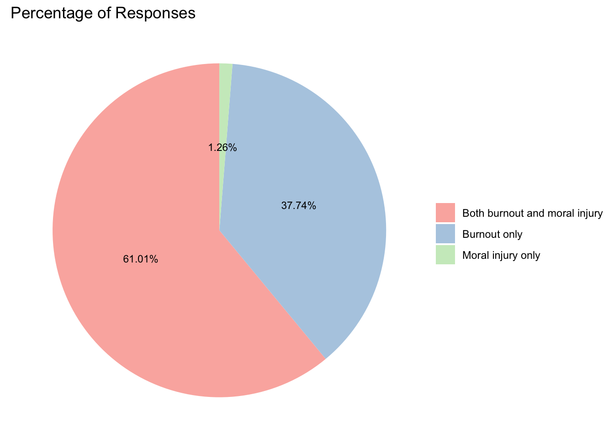
🟧Q2_Category_Survey
| Element | Frequency | Percentage | |
|---|---|---|---|
| 3 | 115 | 72.3270 | |
| 7 | 24 | 15.0943 | |
| 1 | 10 | 6.2893 | |
| 5 | 4 | 2.5157 | |
| 2 | etc | 3 | 1.8868 |
| 6 | Professional society-based communication | 2 | 1.2579 |
| 4 | 1 | 0.6289 |
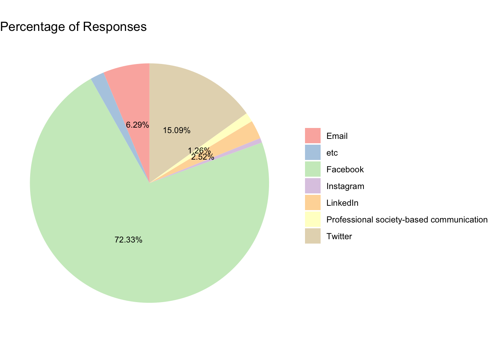
🟧Q3_Category_Position
| Element | Frequency | Percentage | |
|---|---|---|---|
| 2 | A practicing diagnostic radiologist | 147 | 92.4528 |
| 1 | A diagnostic radiologist in training | 12 | 7.5472 |
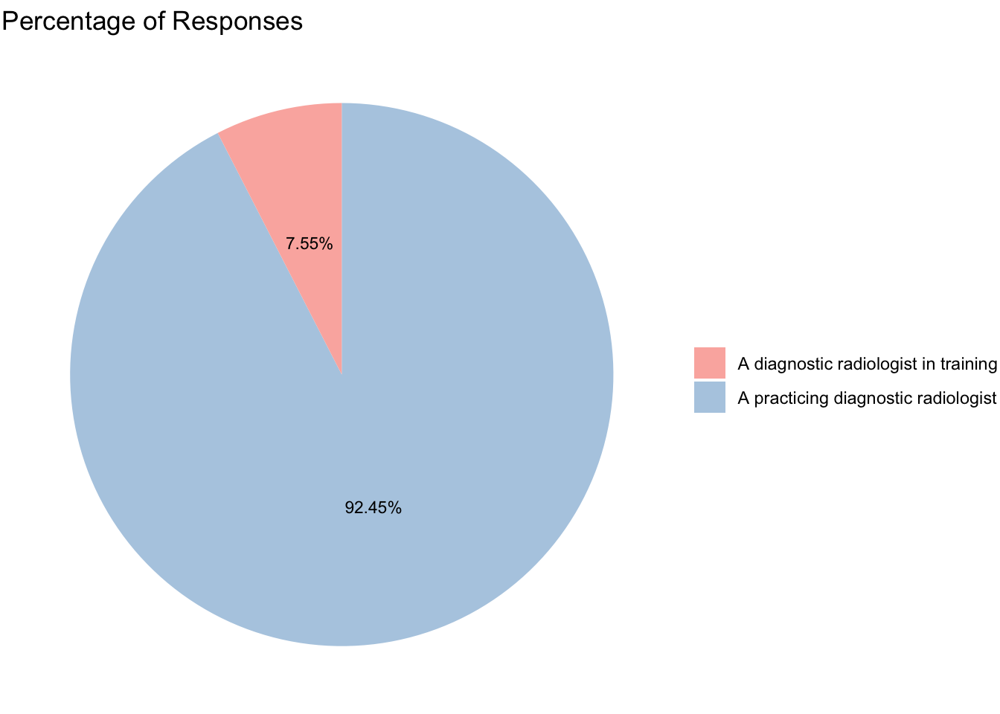
🟧Q4_Category_Years
| Element | Frequency | Percentage | |
|---|---|---|---|
| 3 | 1-10 years | 66 | 41.5094 |
| 4 | 10-20 years | 40 | 25.1572 |
| 2 | >20 years | 36 | 22.6415 |
| 5 | Currently in training | 10 | 6.2893 |
| 1 | <1 year | 7 | 4.4025 |
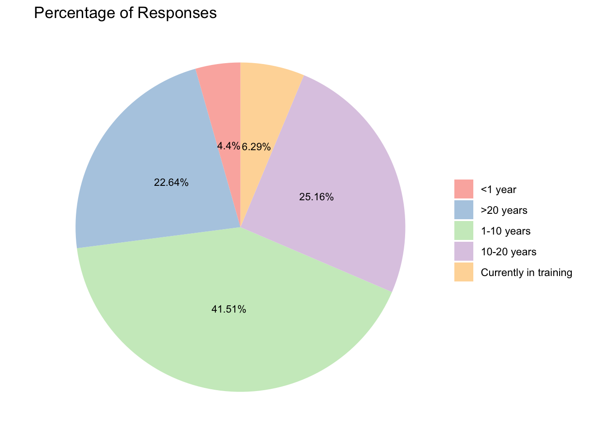
🟧Q6_Category_Sex
| Element | Frequency | Percentage |
|---|---|---|
| Female | 132 | 83.0189 |
| Male | 25 | 15.7233 |
| Other | 1 | 0.6289 |
| Prefer not to say | 1 | 0.6289 |
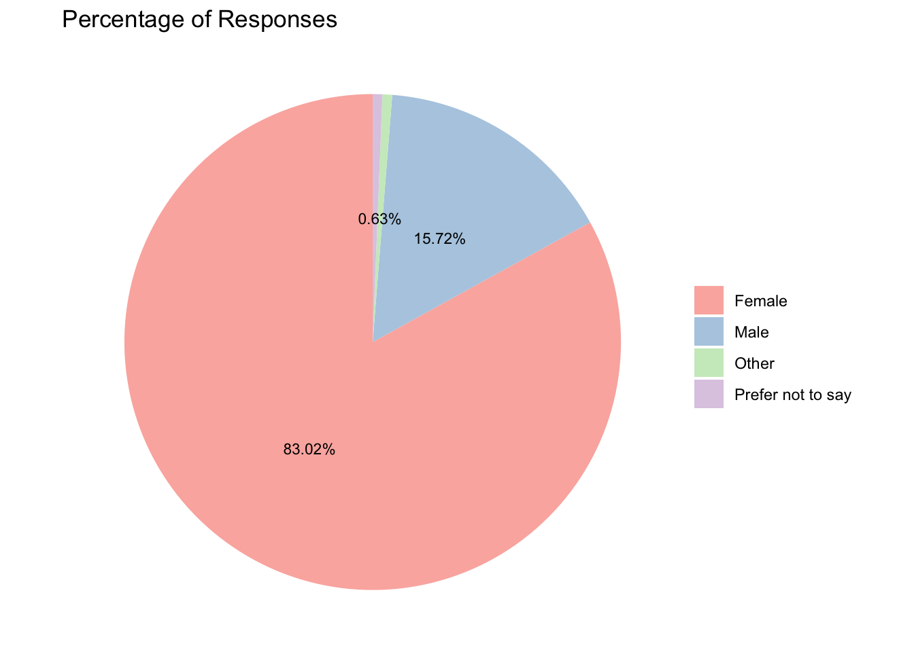
🟧Q7_Category_Ethnicitiy
| Element | Frequency | Percentage | |
|---|---|---|---|
| 7 | White | 89 | 55.9748 |
| 1 | Asian | 34 | 21.3836 |
| 6 | Prefer not to say | 14 | 8.8050 |
| 3 | Hispanic/Latinx | 8 | 5.0314 |
| 4 | Mixed race | 8 | 5.0314 |
| 5 | Other | 4 | 2.5157 |
| 2 | Black or African American | 2 | 1.2579 |

🟧Q8_Category_Marriage
| Element | Frequency | Percentage | |
|---|---|---|---|
| 2 | Married | 130 | 81.7610 |
| 4 | Single | 19 | 11.9497 |
| 1 | Long-term partner | 5 | 3.1447 |
| 3 | Prefer not to say | 5 | 3.1447 |
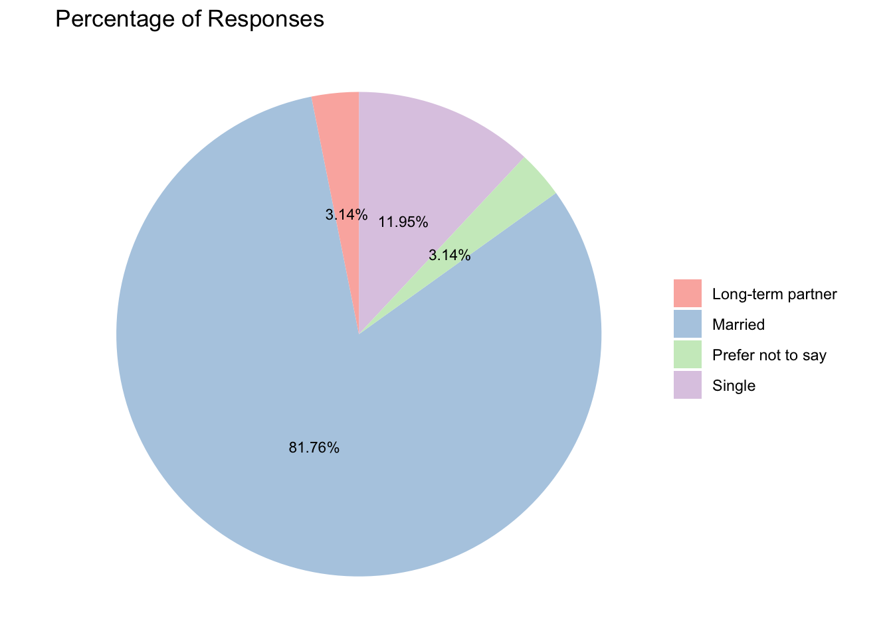
🟧Q9_Category_Practice
| Element | Frequency | Percentage |
|---|---|---|
| Academic | 64 | 40.2516 |
| Community | 61 | 38.3648 |
| Hybrid | 28 | 17.6101 |
| Other | 6 | 3.7736 |
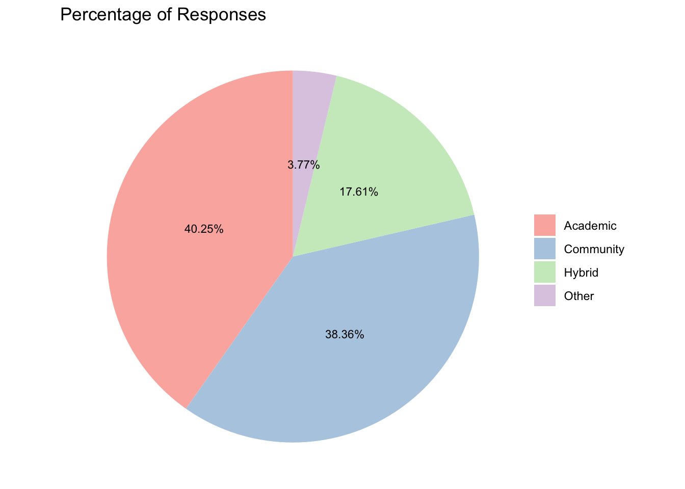
🟧Q11_Category_HomeWork
| Element | Frequency | Percentage | |
|---|---|---|---|
| 2 | 1-24% | 68 | 42.7673 |
| 1 | 0% | 32 | 20.1258 |
| 3 | 100% | 23 | 14.4654 |
| 4 | 25-49% | 23 | 14.4654 |
| 5 | 50-74% | 7 | 4.4025 |
| 6 | 75-99% | 5 | 3.1447 |
| 7 | NA | 1 | 0.6289 |
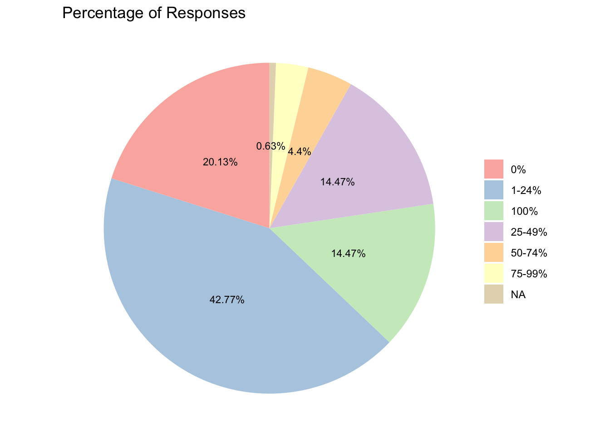
🟧Q12_Category_PracticeHospital
| Element | Frequency | Percentage | |
|---|---|---|---|
| 2 | Yes | 101 | 63.522 |
| 1 | No | 58 | 36.478 |
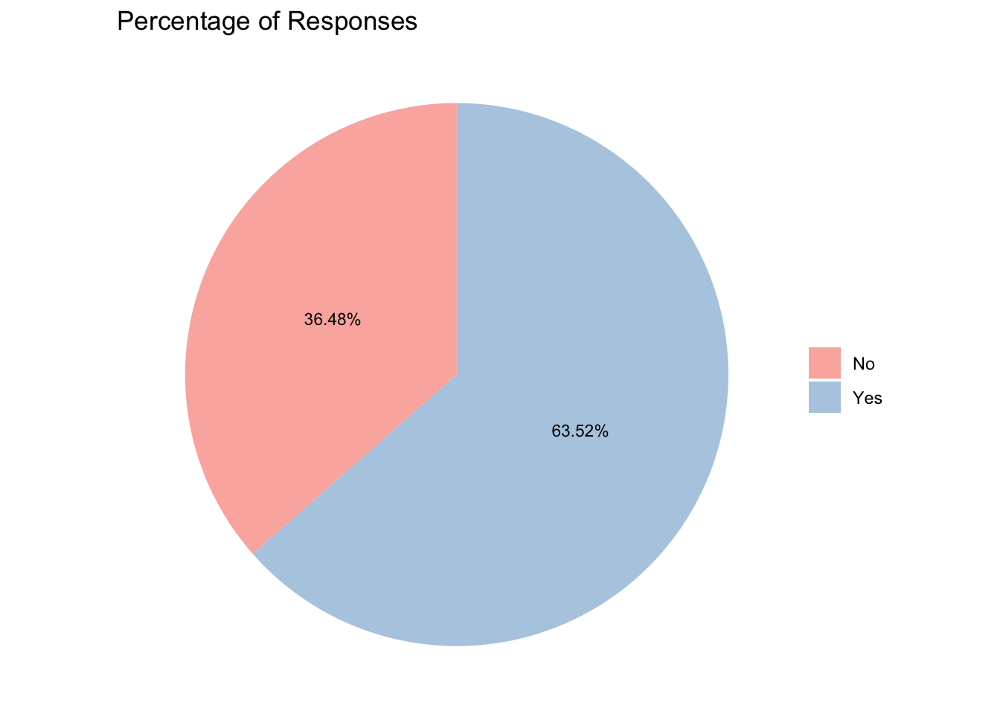
🟧Q13_Category_Leadership
| Element | Frequency | Percentage | |
|---|---|---|---|
| 2 | No | 92 | 57.8616 |
| 3 | Yes | 66 | 41.5094 |
| 1 | NA | 1 | 0.6289 |
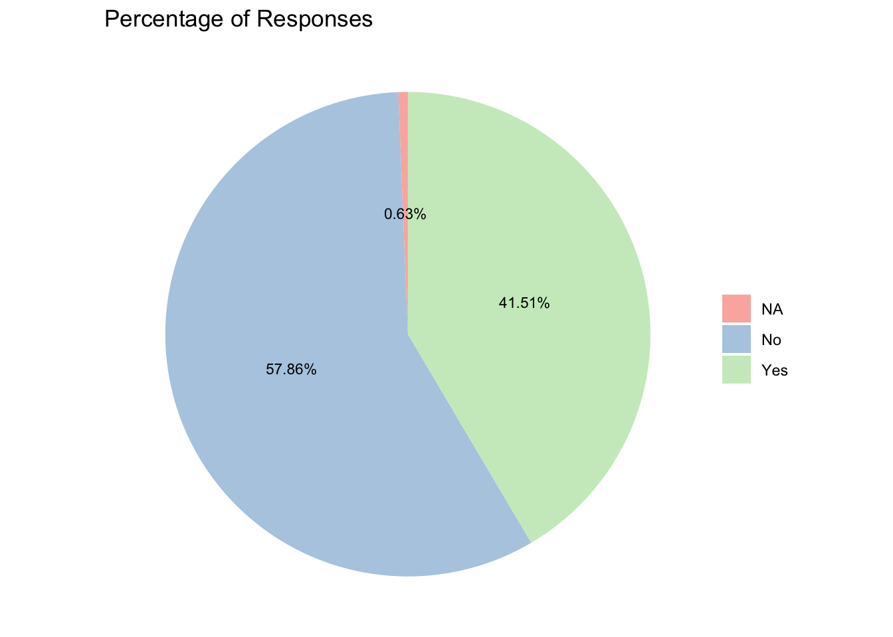
🟧Q14_Category_Practicing_Procedure
| Element | Frequency | Percentage | |
|---|---|---|---|
| 1 | <25% | 59 | 37.1069 |
| 2 | >75% | 33 | 20.7547 |
| 3 | 25-49% | 20 | 12.5786 |
| 4 | 50-74% | 20 | 12.5786 |
| 6 | No clinical responsibilities | 20 | 12.5786 |
| 5 | NA | 7 | 4.4025 |
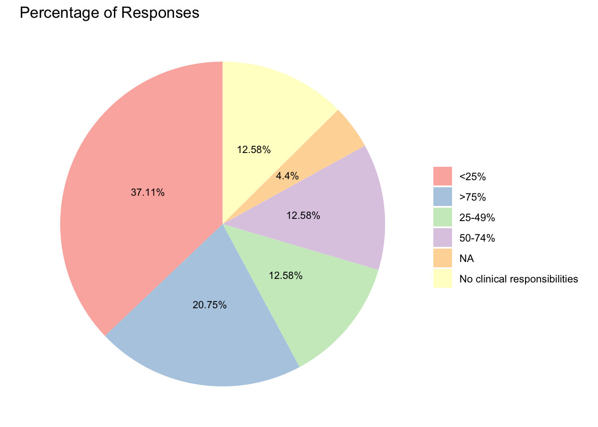
🟧Q15_Category_Practicing_Diagnostic
| Element | Frequency | Percentage | |
|---|---|---|---|
| 2 | >75% | 102 | 64.1509 |
| 4 | 50-74% | 35 | 22.0126 |
| 3 | 25-49% | 9 | 5.6604 |
| 5 | NA | 7 | 4.4025 |
| 1 | <25% | 5 | 3.1447 |
| 6 | No diagnostic radiology responsibilities | 1 | 0.6289 |
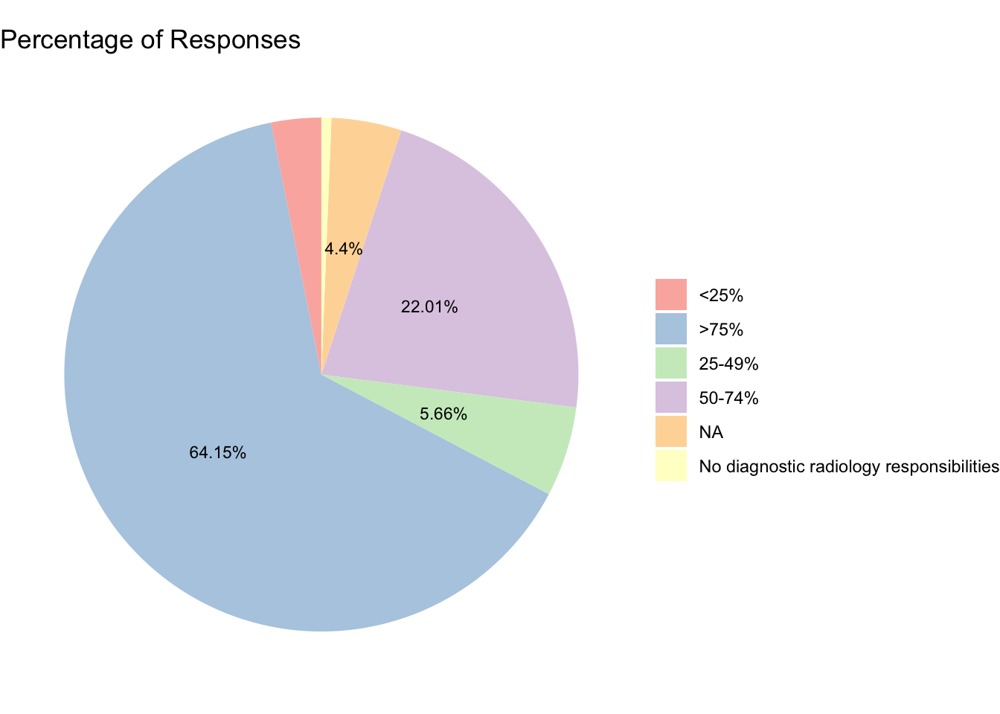
🟧Q16_Category_Practicing_Administrative
| Element | Frequency | Percentage | |
|---|---|---|---|
| 1 | <25% | 97 | 61.0063 |
| 6 | No administrative/non-clinical responsibilities | 28 | 17.6101 |
| 3 | 25-49% | 23 | 14.4654 |
| 5 | NA | 7 | 4.4025 |
| 4 | 50-74% | 3 | 1.8868 |
| 2 | >75% | 1 | 0.6289 |

🟧Q17_Category_Trainee_Level
| Element | Frequency | Percentage | |
|---|---|---|---|
| 1 | NA | 134 | 84.2767 |
| 5 | PGY-6 or higher | 16 | 10.0629 |
| 4 | PGY-5 | 5 | 3.1447 |
| 3 | PGY-4 | 2 | 1.2579 |
| 2 | PGY-1 or 2 | 1 | 0.6289 |
| 6 | Prefer not to say | 1 | 0.6289 |
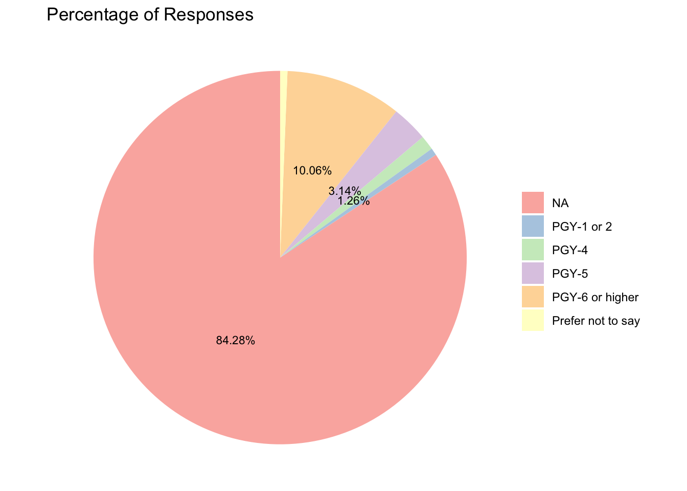
🟧Q29_Category_Distress
| Element | Frequency | Percentage | |
|---|---|---|---|
| 2 | Mild | 55 | 34.5912 |
| 4 | Not at all | 52 | 32.7044 |
| 3 | Moderate | 33 | 20.7547 |
| 5 | Very much | 15 | 9.4340 |
| 1 | Extremely | 4 | 2.5157 |
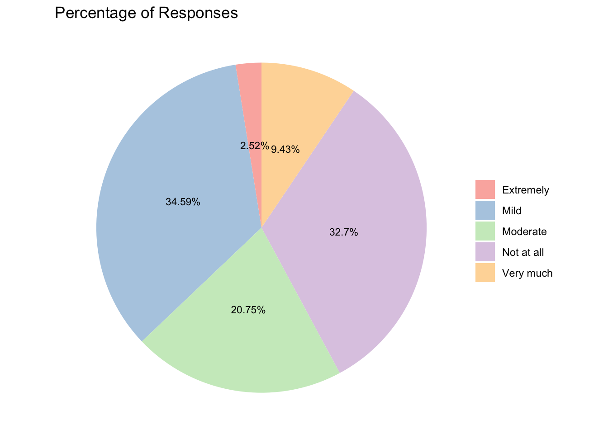
🟥Correlation
🟧Notes
Those 10 questions related to MI (Q19 ~ Q28) were summed up after inverse coding on the positive questions:
MISS-HPThe correlation was calculated between
MISS-HPandQOL(Q18_Score_QOL).Two types of correlations were considered
(1) Linearity : Pearson correlation
(2) Monotonocity : Spearman correlation
🟧Correlation Tests
- The estimated coefficient value
- Spearman
- The monotone relationship was statistically significant (p < 0.01).
- Pearson
- The linear relationship was statistically significant (p < 0.01).
- If MI increases, it can be inferred that QOL tends to decrease statistically.
| Methods | Estimate | Pvals |
|---|---|---|
| Spearman | -0.4185362 | 0 |
| Pearson | -0.4482653 | 0 |

🟥MI Yes vs No
🟧Notes
The
Yesgroup includes subjects whoseMISS-HPscore was ≥ 36.The others are in
No.Although I conducted a mean difference test for this group regarding
MISS-HP, according to the previous analyses, I wonder if this test is necessary when the groups are delineated based onMISS-HPscores. Given that the division is inherently based onMISS-HP, the significance of the p-value is inherently expected.
🟧Mean difference test
🟨MI
- The sample mean and sd for each group :
| Category_MI_Group | count | proportion | mean | sd |
|---|---|---|---|---|
| No | 56 | 0.3522013 | 27.25000 | 5.557141 |
| Yes | 103 | 0.6477987 | 49.69903 | 10.058491 |
The mean difference between these two groups were statistically significant.
However, as I mentioned, this result seems meaningless.
| Each.Group | N_Obs | Norm_Tests | Norm_p.val | is.normal | Homoscedasticity_Test | Homoscedasticity_p.val | is.Homoscedastic | Group | Response | n.obs | method | alternative | effectsize | estimate | conf.level | conf.low | conf.high | conf.method | statistic | p.value | Group.Difference |
|---|---|---|---|---|---|---|---|---|---|---|---|---|---|---|---|---|---|---|---|---|---|
| No | 56 | Shapiro-Wilk | 0.0202987 | FALSE | Fligner-Killeen | 5.65450143428306e-05 | FALSE | Category_MI_Group | Score_MI | 159 | Wilcoxon rank sum test | two.sided | r (rank biserial) | -1 | 0.95 | -1 | -1 | normal | 0 | 2.41492611265846e-25 | TRUE |
| Yes | 103 | Shapiro-Wilk | 0.0001600 | FALSE |
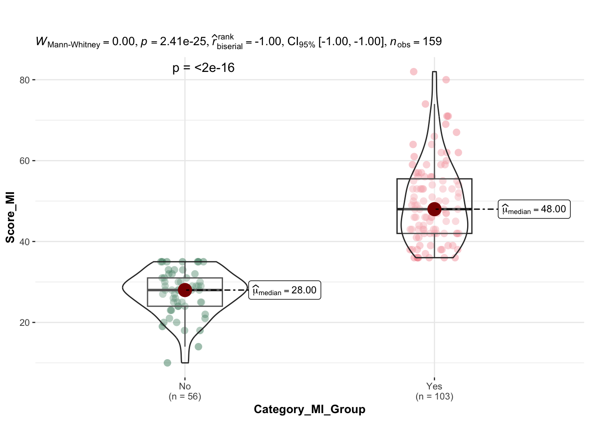
🟨QOL
- The sample mean and sd of QOL for each group :
| Category_MI_Group | count | proportion | mean | sd |
|---|---|---|---|---|
| No | 56 | 0.3522013 | 77.79464 | 13.33273 |
| Yes | 103 | 0.6477987 | 66.28155 | 18.91022 |
The mean difference between MI groups was statistically significant.
- p-val = 0.000037
Since the p-value was significantly low, this can indicate strong evidence in the difference of QOL between MI groups.
| Each.Group | N_Obs | Norm_Tests | Norm_p.val | is.normal | Homoscedasticity_Test | Homoscedasticity_p.val | is.Homoscedastic | Group | Response | n.obs | method | alternative | effectsize | estimate | conf.level | conf.low | conf.high | conf.method | statistic | p.value | Used.Significance.Level | Group.Difference |
|---|---|---|---|---|---|---|---|---|---|---|---|---|---|---|---|---|---|---|---|---|---|---|
| No | 56 | Shapiro-Wilk | 3.44e-05 | FALSE | Fligner-Killeen | 0.0211037919472258 | FALSE | Category_MI_Group | Score_QOL | 159 | Wilcoxon rank sum test | two.sided | r (rank biserial) | 0.392683772538142 | 0.99375 | 0.150876200778798 | 0.590153383432019 | normal | 4016.5 | 3.6918707348719e-05 | 0.00625 | TRUE |
| Yes | 103 | Shapiro-Wilk | 9.87e-05 | FALSE |
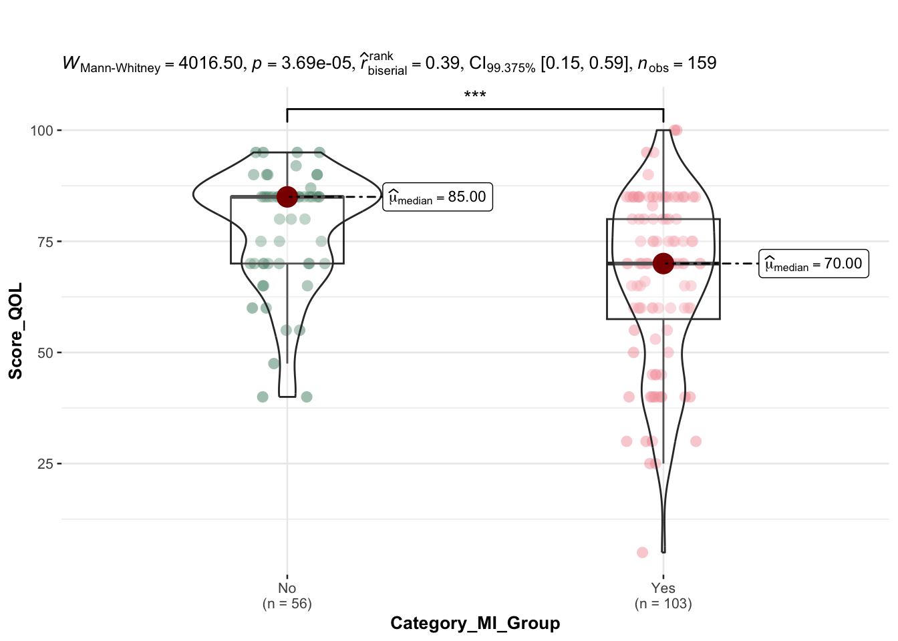
🟥Mean difference
🟧Notes
Before selecting type of test,
Normality testandHomoscedasticity testwas done.Normality
if there were outliers, the Modified Jarque-Bera (MJB) test was employed(Rana, Eshita, and Al Mamun 2021).
In other cases, the Shapiro-Wilk test was employed.
🟧Position
🟨MI
- The sample mean and sd for each group :
| Q3_Category_Position | count | proportion | mean | sd |
|---|---|---|---|---|
| A diagnostic radiologist in training | 12 | 0.0754717 | 46.66667 | 12.33129 |
| A practicing diagnostic radiologist | 147 | 0.9245283 | 41.39456 | 13.92719 |
- No statistical significance was found. (p=0.14)
| Each.Group | N_Obs | Norm_Tests | Norm_p.val | is.normal | Homoscedasticity_Test | Homoscedasticity_p.val | is.Homoscedastic | Group | Response | n.obs | mean.parameter1 | mean.parameter2 | df.error | method | alternative | effectsize | estimate | conf.level | conf.low | conf.high | conf.method | conf.distribution | statistic | p.value | Used.Significance.Level | Group.Difference |
|---|---|---|---|---|---|---|---|---|---|---|---|---|---|---|---|---|---|---|---|---|---|---|---|---|---|---|
| A diagnostic radiologist in training | 12 | Shapiro-Wilk | 0.6095342 | TRUE | F.test | 0.688648888971113 | TRUE | Q3_Category_Position | Score_MI | 159 | 46.6666666666667 | 41.3945578231293 | 157 | Two Sample t-test | two.sided | Hedges’ g | 0.377880555883654 | 0.992857142857143 | -0.375046431717341 | 1.11890738890111 | ncp | t | 1.27052666621343 | 0.205776600956114 | 0.00714285714285714 | FALSE |
| A practicing diagnostic radiologist | 147 | Shapiro-Wilk | 0.1431399 | TRUE |

🟨QOL
- The sample mean and sd of QOL for each group :
| Q3_Category_Position | count | proportion | mean | sd |
|---|---|---|---|---|
| A diagnostic radiologist in training | 12 | 0.0754717 | 70.08333 | 12.75973 |
| A practicing diagnostic radiologist | 147 | 0.9245283 | 70.35714 | 18.36996 |
- No statistical significance was found. (p=0.56)
| Each.Group | N_Obs | Norm_Tests | Norm_p.val | is.normal | Homoscedasticity_Test | Homoscedasticity_p.val | is.Homoscedastic | Group | Response | n.obs | method | alternative | effectsize | estimate | conf.level | conf.low | conf.high | conf.method | statistic | p.value | Used.Significance.Level | Group.Difference |
|---|---|---|---|---|---|---|---|---|---|---|---|---|---|---|---|---|---|---|---|---|---|---|
| A diagnostic radiologist in training | 12 | Shapiro-Wilk | 0.2011867 | TRUE | Fligner-Killeen | 0.13805989560504 | TRUE | Q3_Category_Position | Score_QOL | 159 | Wilcoxon rank sum test | two.sided | r (rank biserial) | -0.0997732426303855 | 0.99375 | -0.519430008475726 | 0.358659122304477 | normal | 794 | 0.564141854423088 | 0.00625 | FALSE |
| A practicing diagnostic radiologist | 147 | Shapiro-Wilk | 0.0000001 | FALSE |
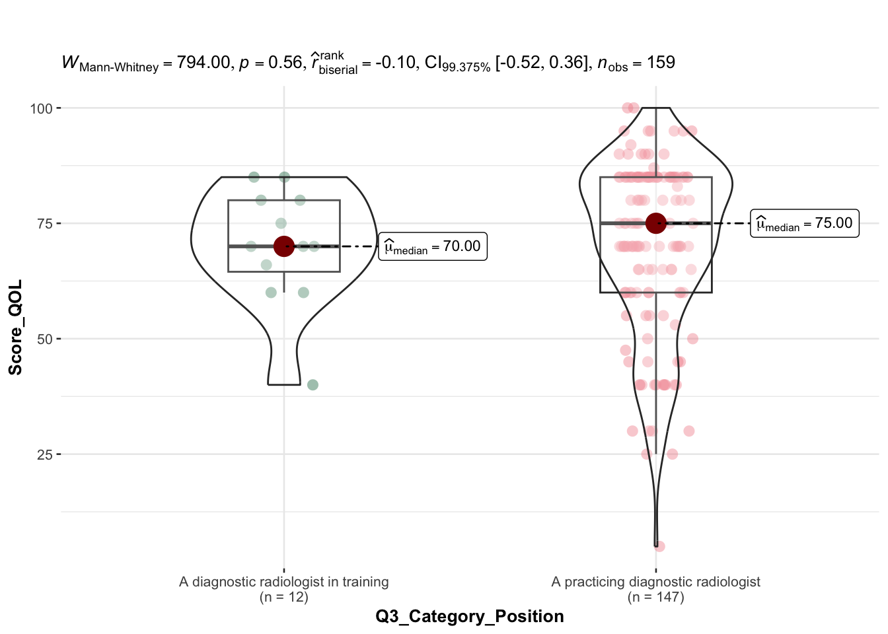
🟧Year
🟨MI
The sample mean and sd of MI for each group :
| Q4_Category_Years | count | proportion | mean | sd |
|---|---|---|---|---|
| 1-10 years | 66 | 0.4150943 | 41.19697 | 14.59844 |
| 10-20 years | 40 | 0.2515723 | 43.80000 | 14.06432 |
| <1 year | 7 | 0.0440252 | 40.42857 | 12.46137 |
| >20 years | 36 | 0.2264151 | 39.52778 | 12.75816 |
| Currently in training | 10 | 0.0628931 | 46.80000 | 12.78715 |
- No statistical significance was found. (p=0.48)
| Each.Group | N_Obs | Norm_Tests | Norm_p.val | is.normal | Homoscedasticity_Test | Homoscedasticity_p.val | is.Homoscedastic | statistic | df | df.error | p.value | method | effectsize | estimate | conf.level | conf.low | conf.high | conf.method | conf.distribution | n.obs | expression | group1 | group2 | p.value_Comparison | p.adjust.method | Post.Hoc_Test | expression | Used.Significance.Level | Group.Difference |
|---|---|---|---|---|---|---|---|---|---|---|---|---|---|---|---|---|---|---|---|---|---|---|---|---|---|---|---|---|---|
| <1 year | 7 | Shapiro-Wilk | 0.930875369623212 | TRUE | Bartlett | 0.903409477761951 | TRUE | 0.821497309147544 | 4 | 154 | 0.513312245799266 | One-way analysis of means | Omega2 | 0 | 0.992857142857143 | 0 | 1 | ncp | F | 159 | list(italic(“F”)“Fisher” == “0.82”, italic(p) == “0.51”, , widehat(omega[“p”]^2) == “0.00”, CI[“99.2857142857143%”] ~ , “[” * ”0.00”, ”1.00” * ”]”, italic(“n”)[“obs”] == “159”) | 1-10 years | 10-20 years | 0.3507663 | None | Student’s t | list(italic(p)[unadj.] == “0.35”) | 0.0071429 | FALSE |
| >20 years | 36 | Shapiro-Wilk | 0.75209917387599 | TRUE | 1-10 years | Currently in training | 0.2360239 | None | Student’s t | list(italic(p)[unadj.] == “0.24”) | 0.0071429 | ||||||||||||||||||
| 1-10 years | 66 | Shapiro-Wilk | 0.282524857264794 | TRUE | 10-20 years | Currently in training | 0.5418703 | None | Student’s t | list(italic(p)[unadj.] == “0.54”) | 0.0071429 | ||||||||||||||||||
| 10-20 years | 40 | Shapiro-Wilk | 0.32471248375368 | TRUE | <1 year | 1-10 years | 0.8894160 | None | Student’s t | list(italic(p)[unadj.] == “0.89”) | 0.0071429 | ||||||||||||||||||
| Currently in training | 10 | Shapiro-Wilk | 0.525957860028815 | TRUE | <1 year | 10-20 years | 0.5541312 | None | Student’s t | list(italic(p)[unadj.] == “0.55”) | 0.0071429 | ||||||||||||||||||
| <1 year | >20 years | 0.8753611 | None | Student’s t | list(italic(p)[unadj.] == “0.88”) | 0.0071429 | |||||||||||||||||||||||
| <1 year | Currently in training | 0.3530517 | None | Student’s t | list(italic(p)[unadj.] == “0.35”) | 0.0071429 | |||||||||||||||||||||||
| >20 years | 1-10 years | 0.5624711 | None | Student’s t | list(italic(p)[unadj.] == “0.56”) | 0.0071429 | |||||||||||||||||||||||
| >20 years | 10-20 years | 0.1822731 | None | Student’s t | list(italic(p)[unadj.] == “0.18”) | 0.0071429 | |||||||||||||||||||||||
| >20 years | Currently in training | 0.1447532 | None | Student’s t | list(italic(p)[unadj.] == “0.14”) | 0.0071429 |
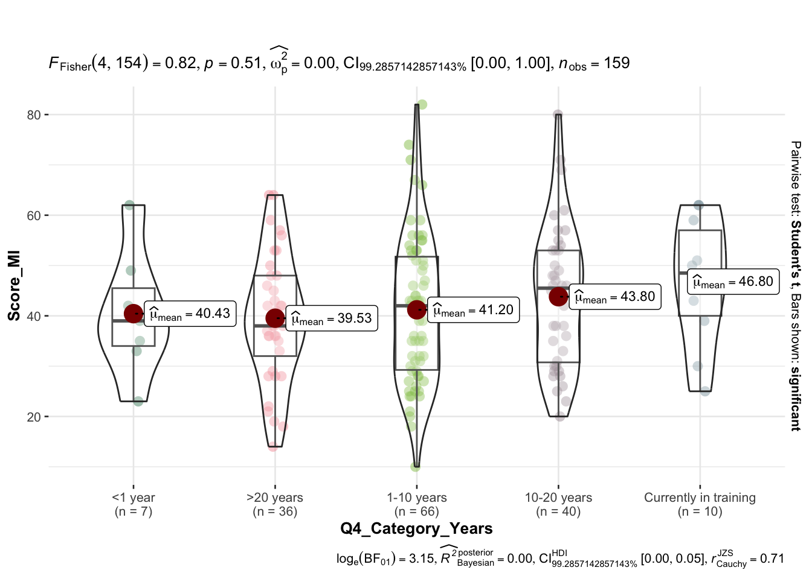
🟨QOL
- The sample mean and sd of QOL for each group :
| Q4_Category_Years | count | proportion | mean | sd |
|---|---|---|---|---|
| 1-10 years | 66 | 0.4150943 | 66.84848 | 19.08220 |
| 10-20 years | 40 | 0.2515723 | 74.05000 | 15.19776 |
| <1 year | 7 | 0.0440252 | 66.42857 | 16.76163 |
| >20 years | 36 | 0.2264151 | 73.04167 | 19.49886 |
| Currently in training | 10 | 0.0628931 | 71.50000 | 13.55032 |
- No statistical significance was found. (p=0.21)
| Each.Group | N_Obs | Norm_Tests | Norm_p.val | is.normal | Homoscedasticity_Test | Homoscedasticity_p.val | is.Homoscedastic | parameter1 | parameter2 | statistic | df.error | p.value | method | effectsize | estimate | conf.level | conf.low | conf.high | conf.method | conf.iterations | n.obs | expression | group1 | group2 | statistic | p.value_Comparison | alternative | distribution | p.adjust.method | Post.Hoc_Test | expression | Used.Significance.Level | Group.Difference |
|---|---|---|---|---|---|---|---|---|---|---|---|---|---|---|---|---|---|---|---|---|---|---|---|---|---|---|---|---|---|---|---|---|---|
| <1 year | 7 | Shapiro-Wilk | 0.422582348500613 | TRUE | Fligner-Killeen | 0.231104675783079 | TRUE | Score_QOL | Q4_Category_Years | 5.90117336809322 | 4 | 0.206651270791556 | Kruskal-Wallis rank sum test | Epsilon2 (rank) | 0.0373491985322356 | 0.99375 | 0.0023317784342437 | 1 | percentile bootstrap | 100 | 159 | list(chi[“Kruskal-Wallis”]^2 * “(” * 4 * “)” == “5.90”, italic(p) == , “0.21”, widehat(epsilon)[“ordinal”]^2 == “0.04”, CI[“99.375%”] ~ , “[” * ”2.33e-03”, ”1.00” * ”]”, italic(“n”)[“obs”] == “159”) | 1-10 years | 10-20 years | 1.9399141 | 0.0523901 | two.sided | z | None | Dunn | list(italic(p)[unadj.] == “0.05”) | 0.00625 | FALSE |
| >20 years | 36 | Shapiro-Wilk | 0.00171452743952475 | FALSE | 1-10 years | Currently in training | 0.4387370 | 0.6608521 | two.sided | z | None | Dunn | list(italic(p)[unadj.] == “0.66”) | 0.00625 | |||||||||||||||||||
| 1-10 years | 66 | Shapiro-Wilk | 0.000952218765565242 | FALSE | 10-20 years | Currently in training | 0.6783587 | 0.4975443 | two.sided | z | None | Dunn | list(italic(p)[unadj.] == “0.50”) | 0.00625 | |||||||||||||||||||
| 10-20 years | 40 | Shapiro-Wilk | 0.000218236116389779 | FALSE | <1 year | 1-10 years | 0.2227016 | 0.8237677 | two.sided | z | None | Dunn | list(italic(p)[unadj.] == “0.82”) | 0.00625 | |||||||||||||||||||
| Currently in training | 10 | Shapiro-Wilk | 0.0686852935367159 | TRUE | <1 year | 10-20 years | 1.1648454 | 0.2440816 | two.sided | z | None | Dunn | list(italic(p)[unadj.] == “0.24”) | 0.00625 | |||||||||||||||||||
| <1 year | >20 years | 1.1480916 | 0.2509307 | two.sided | z | None | Dunn | list(italic(p)[unadj.] == “0.25”) | 0.00625 | ||||||||||||||||||||||||
| <1 year | Currently in training | 0.4817429 | 0.6299886 | two.sided | z | None | Dunn | list(italic(p)[unadj.] == “0.63”) | 0.00625 | ||||||||||||||||||||||||
| >20 years | 1-10 years | 1.8616812 | 0.0626480 | two.sided | z | None | Dunn | list(italic(p)[unadj.] == “0.06”) | 0.00625 | ||||||||||||||||||||||||
| >20 years | 10-20 years | 0.0130065 | 0.9896226 | two.sided | z | None | Dunn | list(italic(p)[unadj.] == “0.99”) | 0.00625 | ||||||||||||||||||||||||
| >20 years | Currently in training | 0.6625856 | 0.5075960 | two.sided | z | None | Dunn | list(italic(p)[unadj.] == “0.51”) | 0.00625 |
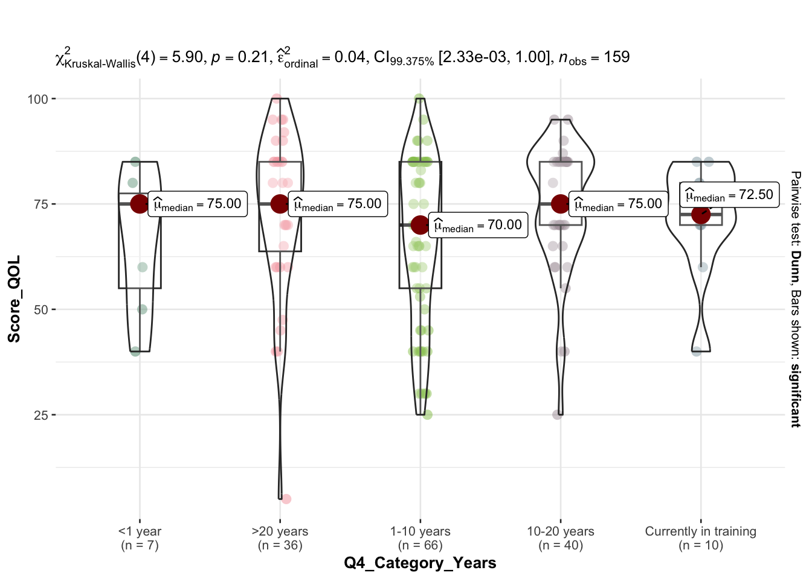
🟧Sex : Male vs Female
- The other groups (
Other,Prefer not to say) were excluded
🟨MI
The sample mean and sd of MI for each group :
| Category_Sex_Male_Female_Only | count | proportion | mean | sd |
|---|---|---|---|---|
| Female | 132 | 0.8301887 | 41.96212 | 14.012756 |
| Male | 25 | 0.1572327 | 41.08000 | 13.732322 |
| NA | 2 | 0.0125786 | 39.50000 | 4.949747 |
- No statistical significance was found. (p=0.83)
| Each.Group | N_Obs | Norm_Tests | Norm_p.val | is.normal | Homoscedasticity_Test | Homoscedasticity_p.val | is.Homoscedastic | Group | Response | n.obs | mean.parameter1 | mean.parameter2 | df.error | method | alternative | effectsize | estimate | conf.level | conf.low | conf.high | conf.method | conf.distribution | statistic | p.value | Used.Significance.Level | Group.Difference |
|---|---|---|---|---|---|---|---|---|---|---|---|---|---|---|---|---|---|---|---|---|---|---|---|---|---|---|
| Female | 132 | Shapiro-Wilk | 0.1758426 | TRUE | Bartlett | 0.898737999049485 | TRUE | Category_Sex_Male_Female_Only | Score_MI | 157 | 41.9621212121212 | 41.08 | 155 | Two Sample t-test | two.sided | Hedges’ g | 0.0621761122531804 | 0.992857142857143 | -0.508434637468313 | 0.631882101387118 | ncp | t | 0.289499791725941 | 0.772585817661348 | 0.00714285714285714 | FALSE |
| Male | 25 | Shapiro-Wilk | 0.6754353 | TRUE |
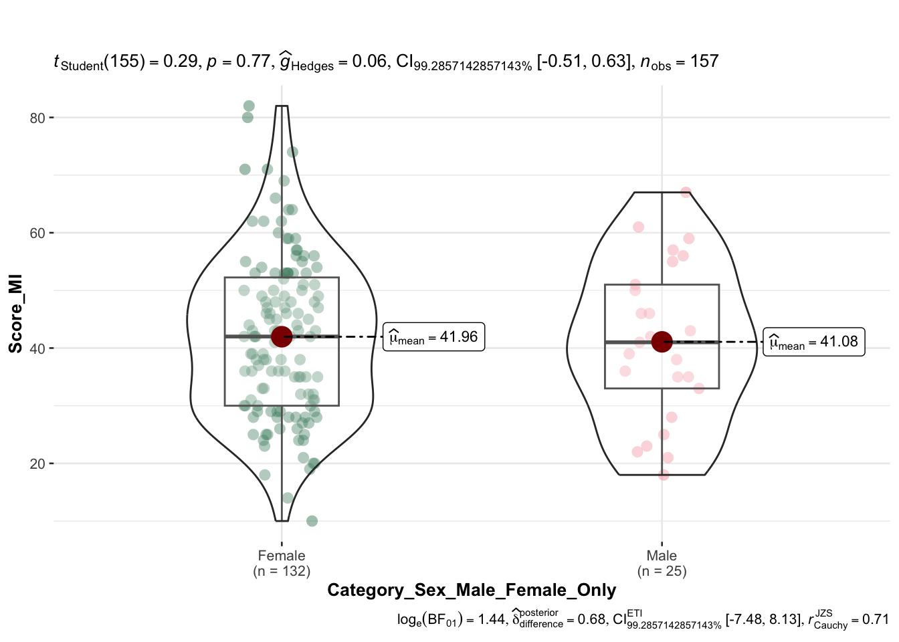
🟨QOL
- The sample mean and sd of QOL for each group :
| Category_Sex_Male_Female_Only | count | proportion | mean | sd |
|---|---|---|---|---|
| Female | 132 | 0.8301887 | 71.125 | 17.84928 |
| Male | 25 | 0.1572327 | 67.800 | 17.62337 |
| NA | 2 | 0.0125786 | 50.000 | 28.28427 |
- No statistical significance was found. (p=0.26)
| Each.Group | N_Obs | Norm_Tests | Norm_p.val | is.normal | Homoscedasticity_Test | Homoscedasticity_p.val | is.Homoscedastic | Group | Response | n.obs | method | alternative | effectsize | estimate | conf.level | conf.low | conf.high | conf.method | statistic | p.value | Used.Significance.Level | Group.Difference |
|---|---|---|---|---|---|---|---|---|---|---|---|---|---|---|---|---|---|---|---|---|---|---|
| Female | 132 | Shapiro-Wilk | 0.0000001 | FALSE | Fligner-Killeen | 0.910070615005686 | TRUE | Category_Sex_Male_Female_Only | Score_QOL | 157 | Wilcoxon rank sum test | two.sided | r (rank biserial) | 0.14030303030303 | 0.99375 | -0.201409936441817 | 0.451570276622133 | normal | 1881.5 | 0.262572616374955 | 0.00625 | FALSE |
| Male | 25 | Shapiro-Wilk | 0.1812492 | TRUE |
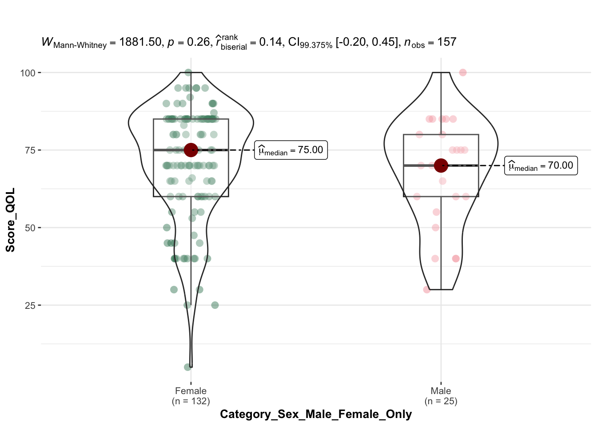
🟧Sex : Male vs The others
- The other groups were considered to be one group (Not Male).
FemaleOtherPrefer not to say
🟨MI
- The sample mean and sd of MI for each group :
| Category_Sex_Male_and_Not_Male | count | proportion | mean | sd |
|---|---|---|---|---|
| Male | 25 | 0.1572327 | 41.08000 | 13.73232 |
| Not Male | 134 | 0.8427673 | 41.92537 | 13.91685 |
- No statistical significance was found. (p=0.84)
| Each.Group | N_Obs | Norm_Tests | Norm_p.val | is.normal | Homoscedasticity_Test | Homoscedasticity_p.val | is.Homoscedastic | Group | Response | n.obs | mean.parameter1 | mean.parameter2 | df.error | method | alternative | effectsize | estimate | conf.level | conf.low | conf.high | conf.method | conf.distribution | statistic | p.value | Used.Significance.Level | Group.Difference |
|---|---|---|---|---|---|---|---|---|---|---|---|---|---|---|---|---|---|---|---|---|---|---|---|---|---|---|
| Male | 25 | Shapiro-Wilk | 0.6754353 | TRUE | F.test | 0.990684609590742 | TRUE | Category_Sex_Male_and_Not_Male | Score_MI | 159 | 41.08 | 41.9253731343284 | 157 | Two Sample t-test | two.sided | Hedges’ g | -0.0597821773205538 | 0.992857142857143 | -0.630017462589343 | 0.511330381955829 | ncp | t | -0.279387935470729 | 0.780314842933053 | 0.00714285714285714 | FALSE |
| Not Male | 134 | Shapiro-Wilk | 0.1806430 | TRUE |
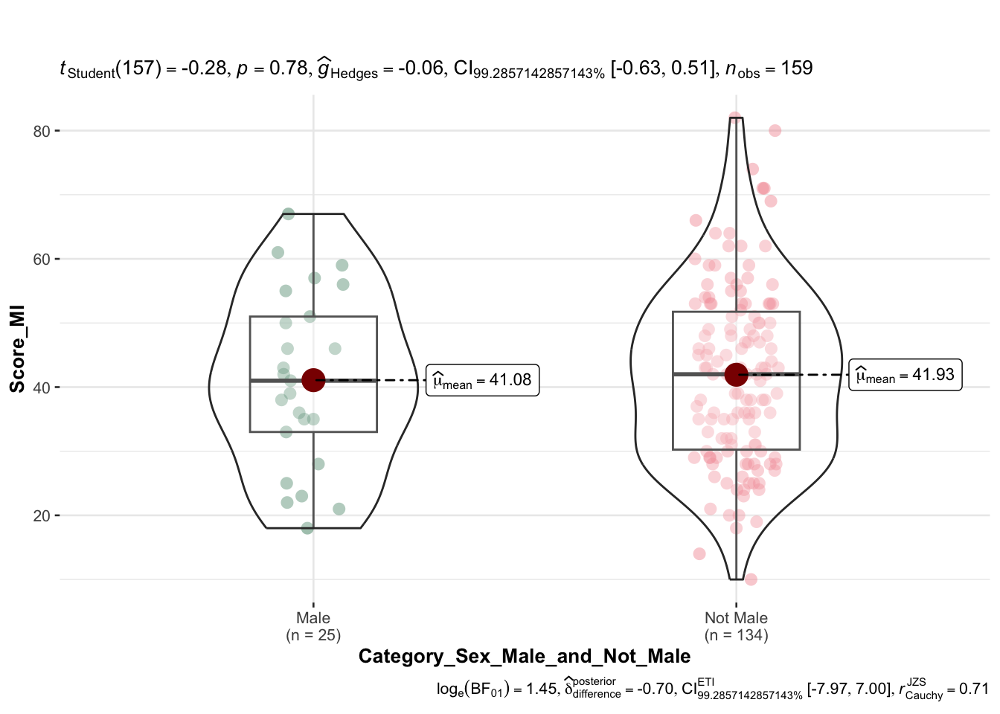
🟨QOL
- The sample mean and sd of QOL for each group :
| Category_Sex_Male_and_Not_Male | count | proportion | mean | sd |
|---|---|---|---|---|
| Male | 25 | 0.1572327 | 67.8000 | 17.62337 |
| Not Male | 134 | 0.8427673 | 70.8097 | 18.06742 |
- No statistical significance was found. (p=0.3)
| Each.Group | N_Obs | Norm_Tests | Norm_p.val | is.normal | Homoscedasticity_Test | Homoscedasticity_p.val | is.Homoscedastic | Group | Response | n.obs | method | alternative | effectsize | estimate | conf.level | conf.low | conf.high | conf.method | statistic | p.value | Used.Significance.Level | Group.Difference |
|---|---|---|---|---|---|---|---|---|---|---|---|---|---|---|---|---|---|---|---|---|---|---|
| Male | 25 | Shapiro-Wilk | 0.1812492 | TRUE | Fligner-Killeen | 0.961926973723579 | TRUE | Category_Sex_Male_and_Not_Male | Score_QOL | 159 | Wilcoxon rank sum test | two.sided | r (rank biserial) | -0.13044776119403 | 0.99375 | -0.443200959657461 | 0.210616660054589 | normal | 1456.5 | 0.297124837339867 | 0.00625 | FALSE |
| Not Male | 134 | Shapiro-Wilk | 0.0000001 | FALSE |
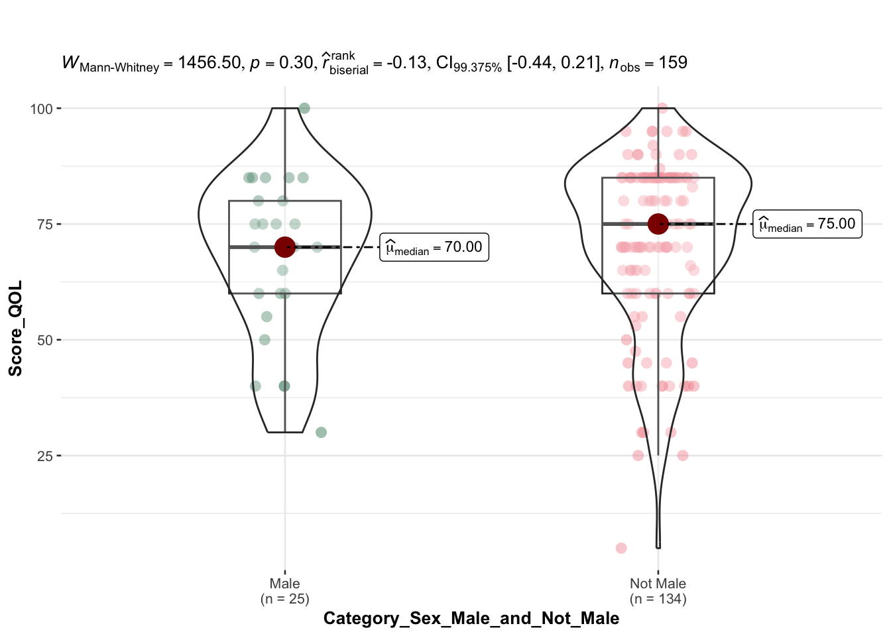
🟧Marriage : Married vs Not Married
2 groups
Married
Not married (single + long-term partner + prefer not to say)
🟨MI
- The sample mean and sd of MI for each group :
| Category_Marriage_Only | count | proportion | mean | sd |
|---|---|---|---|---|
| Married | 130 | 0.8176101 | 40.87692 | 13.97673 |
| Not Married | 29 | 0.1823899 | 45.89655 | 12.68110 |
- No statistical significance was found. (p=0.067)
| Each.Group | N_Obs | Norm_Tests | Norm_p.val | is.normal | Homoscedasticity_Test | Homoscedasticity_p.val | is.Homoscedastic | Group | Response | n.obs | mean.parameter1 | mean.parameter2 | df.error | method | alternative | effectsize | estimate | conf.level | conf.low | conf.high | conf.method | conf.distribution | statistic | p.value | Used.Significance.Level | Group.Difference |
|---|---|---|---|---|---|---|---|---|---|---|---|---|---|---|---|---|---|---|---|---|---|---|---|---|---|---|
| Married | 130 | Shapiro-Wilk | 0.1443657 | TRUE | F.test | 0.561876842112706 | TRUE | Category_Marriage_Only | Score_MI | 159 | 40.8769230769231 | 45.8965517241379 | 157 | Two Sample t-test | two.sided | Hedges’ g | -0.369774520097185 | 0.992857142857143 | -0.90436502331302 | 0.168621792098467 | ncp | t | -1.77703267974432 | 0.0774991799786124 | 0.00714285714285714 | FALSE |
| Not Married | 29 | Shapiro-Wilk | 0.9023117 | TRUE |
🟨QOL
- The sample mean and sd of QOL for each group :
| Category_Marriage_Only | count | proportion | mean | sd |
|---|---|---|---|---|
| Married | 130 | 0.8176101 | 71.97692 | 17.75346 |
| Not Married | 29 | 0.1823899 | 62.98276 | 17.40612 |
- The mean difference of QOL was statistically significant (p = 0.0046).
| Each.Group | N_Obs | Norm_Tests | Norm_p.val | is.normal | Homoscedasticity_Test | Homoscedasticity_p.val | is.Homoscedastic | Group | Response | n.obs | method | alternative | effectsize | estimate | conf.level | conf.low | conf.high | conf.method | statistic | p.value | Used.Significance.Level | Group.Difference |
|---|---|---|---|---|---|---|---|---|---|---|---|---|---|---|---|---|---|---|---|---|---|---|
| Married | 130 | Shapiro-Wilk | 0.0000000 | FALSE | Fligner-Killeen | 0.8873529 | TRUE | Category_Marriage_Only | Score_QOL | 159 | Wilcoxon rank sum test | two.sided | r (rank biserial) | 0.333687 | 0.99375 | 0.0217417 | 0.5864238 | normal | 2514 | 0.0046039 | 0.00625 | TRUE |
| Not Married | 29 | Shapiro-Wilk | 0.5012265 | TRUE | NA | NA | NA | NA | NA | NA | NA | NA | NA | NA | NA | NA | NA | NA | NA | NA | NA | NA |
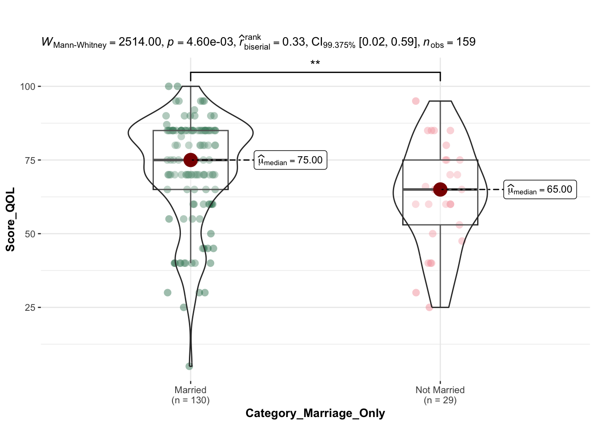
🟧 Marriage : Married (+Long term) vs Not Married
- In this analysis, those in a
long-term relationshipwere categorized within theMarriedgroup.
🟨MI
- The sample mean and sd of MI for each group :
| Category_Marriage_LongTerm | count | proportion | mean | sd |
|---|---|---|---|---|
| Married/Long-term | 135 | 0.8490566 | 41.25185 | 13.99558 |
| Other | 24 | 0.1509434 | 44.83333 | 12.83903 |
- No statistical significance was found. (p=0.22)
| Each.Group | N_Obs | Norm_Tests | Norm_p.val | is.normal | Homoscedasticity_Test | Homoscedasticity_p.val | is.Homoscedastic | Group | Response | n.obs | mean.parameter1 | mean.parameter2 | df.error | method | alternative | effectsize | estimate | conf.level | conf.low | conf.high | conf.method | conf.distribution | statistic | p.value | Used.Significance.Level | Group.Difference |
|---|---|---|---|---|---|---|---|---|---|---|---|---|---|---|---|---|---|---|---|---|---|---|---|---|---|---|
| Married/Long-term | 135 | Shapiro-Wilk | 0.1984466 | TRUE | F.test | 0.651503510568038 | TRUE | Category_Marriage_LongTerm | Score_MI | 159 | 41.2518518518519 | 44.8333333333333 | 157 | Two Sample t-test | two.sided | Hedges’ g | -0.260657170453653 | 0.992857142857143 | -0.829927714540909 | 0.312308009248483 | ncp | t | -1.16881399643586 | 0.244250195398066 | 0.00714285714285714 | FALSE |
| Other | 24 | Shapiro-Wilk | 0.9296784 | TRUE |
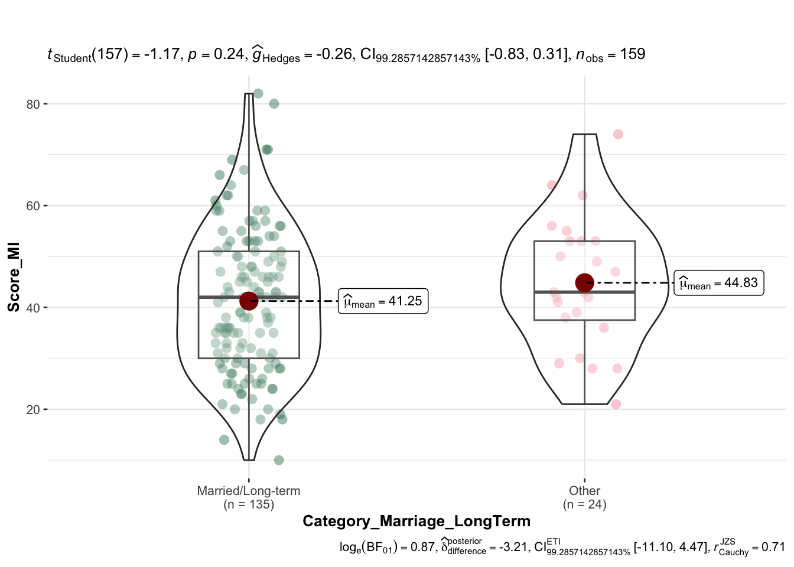
🟨QOL
- The sample mean and sd of QOL for each group :
| Category_Marriage_LongTerm | count | proportion | mean | sd |
|---|---|---|---|---|
| Married/Long-term | 135 | 0.8490566 | 71.53333 | 17.70395 |
| Other | 24 | 0.1509434 | 63.60417 | 18.39127 |
No statistical significance was found. (p=0.028)
Though the p-value is lower than 0.05, our adjusted significance level was 0.00625 (>0.0028).
| Each.Group | N_Obs | Norm_Tests | Norm_p.val | is.normal | Homoscedasticity_Test | Homoscedasticity_p.val | is.Homoscedastic | Group | Response | n.obs | method | alternative | effectsize | estimate | conf.level | conf.low | conf.high | conf.method | statistic | p.value | Used.Significance.Level | Group.Difference |
|---|---|---|---|---|---|---|---|---|---|---|---|---|---|---|---|---|---|---|---|---|---|---|
| Married/Long-term | 135 | Shapiro-Wilk | 0.0000001 | FALSE | Fligner-Killeen | 0.583593569880365 | TRUE | Category_Marriage_LongTerm | Score_QOL | 159 | Wilcoxon rank sum test | two.sided | r (rank biserial) | 0.27962962962963 | 0.99375 | -0.0634540682523314 | 0.563604420946187 | normal | 2073 | 0.0277656215465523 | 0.00625 | FALSE |
| Other | 24 | Shapiro-Wilk | 0.5751497 | TRUE |
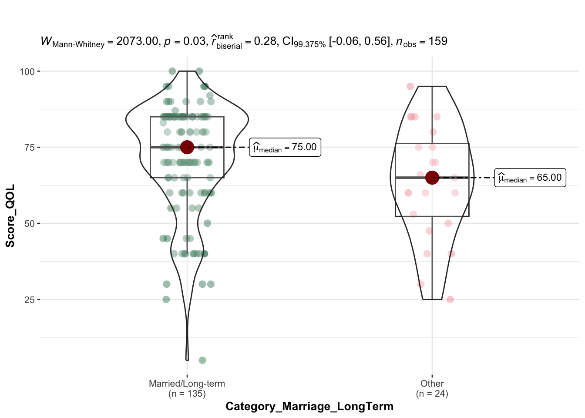
🟧Practice Hospital
Do you practice at more than one hospital?
Yes
No
🟨MI
- The sample mean and sd of MI for each group :
| Q12_Category_PracticeHospital | count | proportion | mean | sd |
|---|---|---|---|---|
| No | 58 | 0.3647799 | 40.86207 | 12.58020 |
| Yes | 101 | 0.6352201 | 42.32673 | 14.56029 |
- No statistical significance was found. (p=0.61)
| Each.Group | N_Obs | Norm_Tests | Norm_p.val | is.normal | Homoscedasticity_Test | Homoscedasticity_p.val | is.Homoscedastic | Group | Response | n.obs | mean.parameter1 | mean.parameter2 | df.error | method | alternative | effectsize | estimate | conf.level | conf.low | conf.high | conf.method | conf.distribution | statistic | p.value | Used.Significance.Level | Group.Difference |
|---|---|---|---|---|---|---|---|---|---|---|---|---|---|---|---|---|---|---|---|---|---|---|---|---|---|---|
| No | 58 | Shapiro-Wilk | 0.2436689 | TRUE | F.test | 0.229456978802513 | TRUE | Q12_Category_PracticeHospital | Score_MI | 159 | 40.8620689655172 | 42.3267326732673 | 157 | Two Sample t-test | two.sided | Hedges’ g | -0.10703945919954 | 0.992857142857143 | -0.539159621482254 | 0.325480557284066 | ncp | t | -0.64077953210134 | 0.522600128074952 | 0.00714285714285714 | FALSE |
| Yes | 101 | Shapiro-Wilk | 0.5192198 | TRUE |
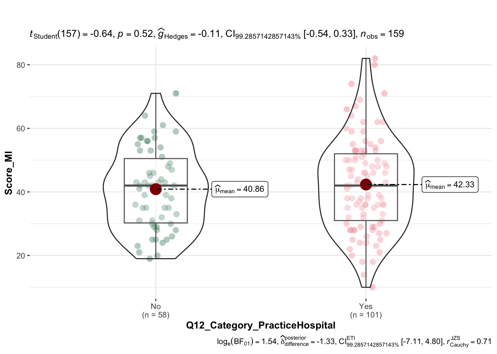
🟨QOL
- The sample mean and sd of QOL for each group :
| Q12_Category_PracticeHospital | count | proportion | mean | sd |
|---|---|---|---|---|
| No | 58 | 0.3647799 | 69.86207 | 19.38208 |
| Yes | 101 | 0.6352201 | 70.60891 | 17.21244 |
- No statistical significance was found. (p=0.91)
| Each.Group | N_Obs | Norm_Tests | Norm_p.val | is.normal | Homoscedasticity_Test | Homoscedasticity_p.val | is.Homoscedastic | Group | Response | n.obs | method | alternative | effectsize | estimate | conf.level | conf.low | conf.high | conf.method | statistic | p.value | Used.Significance.Level | Group.Difference |
|---|---|---|---|---|---|---|---|---|---|---|---|---|---|---|---|---|---|---|---|---|---|---|
| No | 58 | Shapiro-Wilk | 0.0036668 | FALSE | Fligner-Killeen | 0.599620691807251 | TRUE | Q12_Category_PracticeHospital | Score_QOL | 159 | Wilcoxon rank sum test | two.sided | r (rank biserial) | -0.0105838170023899 | 0.99375 | -0.265009651432928 | 0.245219826061674 | normal | 2898 | 0.91216317032877 | 0.00625 | FALSE |
| Yes | 101 | Shapiro-Wilk | 0.0000004 | FALSE |
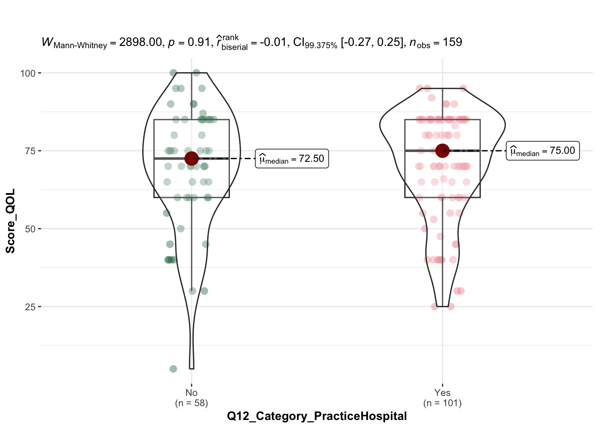
🟥Wordcloud
🟨Notes
🟨Q30_Written_Contributor
The answers could be classified into the following groups:
Bureaucracy and workload
Lack of autonomy and restrictions
Lack of trust and transparency
System failures and patient care
Workplace challenges and stress
Self conflict and emotional issues
🟨Q31_Written_Alleviate
The answers could be classified into the following groups:
Administrative reduction and respect
Workload reduction and support
Professional autonomy and leadership
Patient centered care and decision engagement